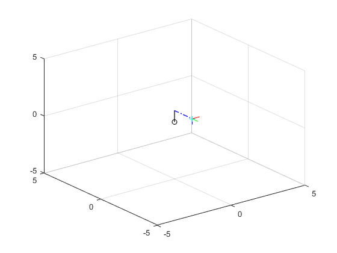

Robot Simulation: By Max Lemon, Tejas Gulur, Atish Anantharam, and James Farrell
This code lets a user to put the amount of degrees (in radians) that a joint experiences for the four joints in the given robot. It will use the PoE method to give the end effector final position as well as show a graphical analysis of the robot moving
Contents
Setup
close all; % Close any open figures clear; % Clear workspace clc; % Clear command window I = eye(3); % Initialize 3x3 identity matrix Oo = [0 0 0]; Xo = [.5 0 0]; Yo = [0 .5 0]; Zo = [0 0 .5];
Anonymous functions
% Anonymous function to caclulate the skew matrix of a vector skew = @(v) [0 -v(3) v(2); v(3) 0 -v(1); -v(2) v(1) 0]; % Anonymous function to calculate the matrix exponential using Rodrigues % formula rod = @(SKEW, V, T) [I+sin(T)*SKEW+(1-cos(T))*(SKEW^2) (I*T+(1-cos(T))*SKEW+(T-sin(T))*(SKEW^2))*V'; 0 0 0 1];
Setting robot parameters (constants)
Me = [0 0 1 1; 0 -1 0 0; 1 0 0 0; 0 0 0 1]; % Home position of end-effector n = 4; % Number of joints % Initializing the needed variables M = cell(n,1); % % Home position of the different joints w = cell(n,1); % Rotation axes q = cell(n,1); % Displacement vectors v = cell(n,1); % Linear velocity vectors theta = cell(n,1); % Joint variables del_theta = cell(n,1); % Incremental change in theta (for use in animation) s = cell(n,1); % Skew axes S = cell(n,1); % Skew matrices e_s = cell(n,1); % Exponentials of skew matrices L1 = cell(3,1); % Coordinates for link 1 (between J2 & J3) L2 = cell(3,1); % Coordinates for link 2 (between J3/J4 & EE) Lx = cell(3,1); % Coordinates for EE x-axis Ly = cell(3,1); % Coordinates for EE y-axis Lz = cell(3,1); % Coordinates for EE z-axis % Home position of joints M{1} = eye(4); M{2} = [1 0 0 0; 0 0 -1 0; 0 1 0 0; 0 0 0 1]; M{3} = [0 -1 0 1; 0 0 -1 0; 1 0 0 0; 0 0 0 1]; M{4} = Me; % Rotation axes of revolute joints w{1} = [0 0 1]; w{2} = [0 -1 0]; w{3} = [0 -1 0]; w{4} = [0 0 0]; % Displacement of revolute joints q{1} = [0 0 0]; q{2} = [0 0 0]; q{3} = [1 0 0]; % Direction of prismatic joints v{4} = [1 0 0]; % Joint variables theta{1} = pi/2; theta{2} = pi/2; theta{3} = pi/2; theta{4} = pi/2; % fprintf('Please provide the degree of change joint %d experiences in radians: ', 1) % theta{1} = input(''); % fprintf('Please provide the degree of change joint %d experiences in radians: ', 2) % theta{2} = input(''); % fprintf('Please provide the degree of change joint %d experiences in radians: ', 3) % theta{3} = input(''); % fprintf('Please provide the length joint %d increases by in radians: ', 4) % theta{4} = input('');
Performing Calculations
% Finding linear velocity induced by rotation for i=1:3 v{i} = -cross(w{i}, q{i}); end % Calculate skew axes, skew matrices, set each joint variable to pi/2, and % find the matrix expoential for each joint for i=1:n s{i} = [w{i}'; v{i}']; S{i} = [skew(w{i}) v{i}'; 0 0 0 0]; e_s{i} = rod(skew(w{i}), v{i}, theta{i}); end % Calculate the final transformation matrix T = e_s{1}*e_s{2}*e_s{3}*e_s{4}*Me; R = T(1:3, 1:3); angle_theta = acos((trace(R) - 1)/2); axis_k = (1 / (2 * sin(angle_theta))) * [(R(3,2) - R(2,3)); (R(1,3) - R(3,2)); (R(2,1) - R(1,2))]; disp('End effector configuration: ') disp(T) disp('The end effector is located as follows from the home frame (x, y, z): ') disp(T(1:3,4)) disp('Axis angle notation for rotation is as follows') disp('theta (radians) = ') disp(angle_theta) disp('Rotation axis k = ') disp(axis_k)
End effector configuration:
-0.0000 1.0000 -0.0000 -0.0000
-0.0000 -0.0000 -1.0000 -1.5708
-1.0000 0 0.0000 1.0000
0 0 0 1.0000
The end effector is located as follows from the home frame (x, y, z):
-0.0000
-1.5708
1.0000
Axis angle notation for rotation is as follows
theta (radians) =
2.0944
Rotation axis k =
0.5774
-0.0000
-0.5774
Performing animation
frames = 120; % Number of frames for the animation P = cell(n,1); % Position of the joints F(frames) = struct('cdata', [], 'colormap', []); % Initialize strcut to store animation frames % Joints 1 & 2 are always positioned at the origin P{1} = [0 0 0]; P{2} = [0 0 1]; % Determine the incremental values for i=1:n del_theta{i} = theta{i}/frames; end % Calculate & plot values at each incremental value for i=1:frames % Calculate the matrix exponetial for each joint at each increment for j=1:n theta{j} = i*del_theta{j}; e_s{j} = rod(skew(w{j}), v{j}, theta{j}); end % Find the position of joint 3 & 4, and end-effector T3 = e_s{1}*e_s{2}*M{3}; %Tranformation matrix for joint 3 T4 = e_s{1}*e_s{2}*e_s{3}*M{4}; %Transformation matrix for joint 4 T = e_s{1}*e_s{2}*e_s{3}*e_s{4}*Me; % Extract position data from transformation matrices P{3} = T3(1:3, 4)'; P{4} = T4(1:3, 4)'; Pe = T(1:3, 4)'; % Axes for orientation display O = T*[Oo';1]; X = T*[Xo';1]; Y = T*[Yo';1]; Z = T*[Zo';1]; for k=1:3 % The line betwen joints 2 & 3 L1{k} = [P{2}(k) P{3}(k)]; % The line between joint 3 and the end-effector L2{k} = [P{3}(k) Pe(k)]; % X-axis in new orientation Lx{k} = [O(k) X(k)]; % Y-axis in new orientation Ly{k} = [O(k) Y(k)]; % Z-axis in new orientation Lz{k} = [O(k) Z(k)]; end % Clear the current plot clf; % Initialize plot parameters grid on; hold on; view(3); xlim([-5 5]); ylim([-5 5]); zlim([-5 5]); % Plot the different components plot3(0, 0, 0, 'ko') % The origin, also location of J1 plot3([0 0], [0 0], [0 1], '-k', 'LineWidth', 1); % Line bewteen J1 & J2 plot3(L1{1}, L1{2}, L1{3}, '-k', 'LineWidth', 1); % Line between J2 & J3 plot3(L2{1}, L2{2}, L2{3}, '-.b', 'LineWidth', 1); % Line between J3 & EE plot3(Pe(1), Pe(2), Pe(3), '+c'); % End effector plot3(Lx{1}, Lx{2}, Lx{3}, '-b'); plot3(Ly{1}, Ly{2}, Ly{3}, '-r'); plot3(Lz{1}, Lz{2}, Lz{3}, '-g'); % Capture the current plot as a animation frame F(i) = getframe(); end % Play back the animation % figure(); % movie(F, 1, 60);